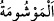

cevap veriliyor.
Müfti Sa‘dî şöyle der: “Bu ifadenin, lânetlenmeleri için yapılmış bir bedduâ olması
da câizdir.”
el-Hidâye’nin şerhi olan el-Kifâye’de şöyle denilir: “İki çeşit lânet vardır: Birincisi
Allah’ın rahmetinden kovulmaktır. Bu sadece kâfirler için söz konusudur. İkincisi ise
iyilerin derecesinden ve sâlihlerin makamından uzaklaştırılmaktır. Hz. Peygamber
(s.a.)’in: “Değeri artsın diye mal depolayan karaborsacı mel’undur.”[142] şeklindeki
hadisiyle kasdedilen lânet budur. Çünkü ehl-i sünnet ve’l-cemaat, büyük günah işlediği
için hiç kimseyi îmândan çıkarmaz.”
Şu hadisler ise umûmî lânetle ilgilidir:
“Allah, ebeveynine lânet edene lânet etsin! Allah, Allah’tan başkasının adına
hayvan boğazlayana lânet etsin! Allah günahkârı barındırana lânet etsin! Allah arazi
sınırlarını değiştirene lânet etsin!”[143]
Bir diğer hadis ise şöyledir: “Allah fâizi yiyene, yedirene, fâiz muâmelesini yazana
ve muâmeleye şâhidlik edene lânet etsin! Allah dövme yapan kadına, (vâşime) dövme
yaptıran kadına, (mevşûme) sadaka verilmesine mâni olana, boşanmış kadını eski
kocasına helâl kılmak için hülle yapana ve hülle yaptırana lânet etsin!”[144]
“__WORD__” derinin iğne ucuyla açılıp mavi renk bir bitkiyle ya da sürmeyle
doldurulması suretiyle bedende elde edilen maviliğe denir. __WORD__ ise bunu bedenine
yaptıran kadındır.
Bir başka hadiste şöyle buyrulur: “Allah rüşvet verene de alana da, aracılara da
lânet etsin!”[145] Hadisteki “Râiş”; rüşvet alan ile veren arasında işi ayarlamaya çalışan
kişi demektir.”
Bir hadis de şöyledir: “Allah şarabı, şarap içeni, getireni, satanı, satın alanı,
üzümünü sıkanı, sıktıranı, taşıyanı, kendisine taşınanı, parasını yiyeni
lânetlemiştir.”[146]
el-Eşbâh’ta belirtildiği gibi bir müslümanın kâfire şarap yapmak üzere ücretle üzüm
sıkması mekruhtur. Sıkılmış üzüm suyunu şarap yapacak birine satmak câizdir. Çünkü
sıkılmış üzüm suyu mâsiyetten uzaktır. Değiştikten sonra fâsid olmaktadır. Ancak fitne
günlerinde silâh satmak böyle değildir. Çünkü silâhın bizzat kendisi değişmeyen bir
âlettir. Yâni fitne günlerinde şâyet satıcı, müşterinin fitne ehlinden biri olduğunu
biliyorsa, silâh satması mekruh olur. Çünkü bu, mâsıyet işlenmesine sebep olacaktır. Bir
müslüman şarap satıp parasını aldığında, başka bir şahsa borcu varsa, alacaklının şarap
bedelinden alacağını tahsil etmesi mekrûhtur. Eğer satıcı zimmî ise alacaklının şarap
parasını ondan almasında bir sakınca yoktur. Zira şarap zimmîler açısından mütekavvim
(dayanıklı) bir maldır. Bu bakımdan zimmî şarabın bedeline mâlik olur ve bu parayı
ondan almak helâl olur.”